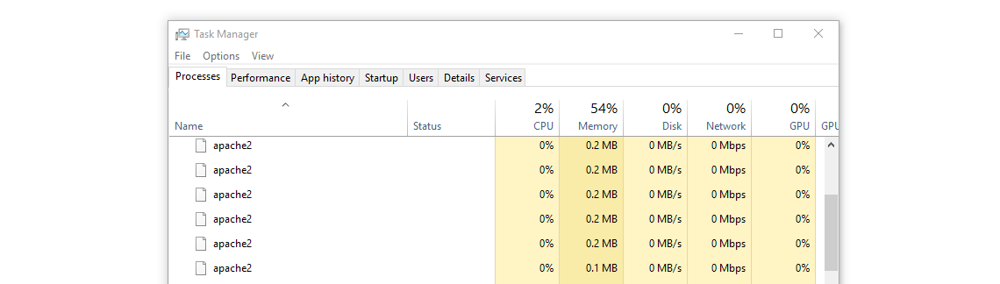

<!DOCTYPE html><html><head><meta charset=UTF-8 /><meta content="IE=edge,chrome=1" http-equiv=X-UA-Compatible /><meta content="width=device-width" name=viewport /><script>var host = "hellojason.net";
if ((host == window.location.host) && (window.location.protocol != "https:"))
  window.location.protocol = "https";</script><meta content="index,follow" name=robots /><link href="../../apple-touch-icon.png?v=Gvm449pRYq" rel=apple-touch-icon sizes=180x180 /><link href="../../favicon-32x32.png?v=Gvm449pRYq" rel=icon sizes=32x32 type="image/png"/><link href="../../favicon-16x16.png?v=Gvm449pRYq" rel=icon sizes=16x16 type="image/png"/><link href="/site.webmanifest?v=Gvm449pRYq" rel=manifest /><link color="#a432f4" href="../../safari-pinned-tab.svg?v=Gvm449pRYq" rel=mask-icon /><link href="../../favicon.ico?v=Gvm449pRYq" rel="shortcut icon"/><meta content="#a432f4" name=msapplication-TileColor /><meta content="#ffffff" name=theme-color /> <title>Hello Jason / How to setup WordPress locally on Windows Subsystem for Linux</title><meta content="For web developers on Windows who prefer the command line and want to avoid virtual machines." name=description /><link href="../../assets/stylesheets/site-64105e90.css" rel=stylesheet /><link href="https://hellojason.net//blog/how-to-setup-wordpress-locally-on-windows-subsystem-for-linux/" rel=canonical /><script>(function(i,s,o,g,r,a,m){i['GoogleAnalyticsObject']=r;i[r]=i[r]||function(){
(i[r].q=i[r].q||[]).push(arguments)},i[r].l=1*new Date();a=s.createElement(o),
m=s.getElementsByTagName(o)[0];a.async=1;a.src=g;m.parentNode.insertBefore(a,m)
})(window,document,'script','//www.google-analytics.com/analytics.js','ga');

ga('create', 'UA-48926813-1', 'auto');
ga('send', 'pageview');
ga('set', 'anonymizeIp', true);</script></head><body class="blog blog_how-to-setup-wordpress-locally-on-windows-subsystem-for-linux blog_how-to-setup-wordpress-locally-on-windows-subsystem-for-linux_index"></body><header class=banner role=banner><div id=primary-navigation role=navigation><div class=navbar-header><a class=logo href="/" title="Hello Jason Portfolio"><svg id=hellojason-logo xmlns="http://www.w3.org/2000/svg" width="0.56in" height="0.56in" viewBox="0 0 40.6 40.6"><defs><style>.cls-1{fill:#fbac2d;}</style></defs><title>hello-jason-logo</title><path class=cls-1 d="M9.3,13.1a4.11,4.11,0,0,1,2.8-.7H29.9a4.42,4.42,0,0,1,2.9.7,3.39,3.39,0,0,1,.8,2.5v0.5H28.4A1.43,1.43,0,0,0,27,17.5v0.9q3.75,0,4.8.9c0.7,0.6.9,2.9,0.9,2.9a28.1,28.1,0,0,1,.1,2.9V29a1.43,1.43,0,0,1-1.4,1.4h-8A1.43,1.43,0,0,1,22,29V28.1c0-1.9.2-3.1,0.7-3.6a3.37,3.37,0,0,1,1.7-.6,1.42,1.42,0,0,0,1.4-1.2,1.33,1.33,0,0,0-1.4-1.1H16.9A1.43,1.43,0,0,0,15.5,23v0.7c1.6,0,2.7.2,3.2,0.7a5.14,5.14,0,0,1,.6,2.3,23.48,23.48,0,0,1,.1,2.6A1.33,1.33,0,0,1,18,30.4H11A1.43,1.43,0,0,1,9.6,29V23.5c0-2.2.3-3.5,0.8-4.1a4.15,4.15,0,0,1,1.8-.7,15.26,15.26,0,0,1,1.8-.1,1.23,1.23,0,0,0,.4-1.2A1.33,1.33,0,0,0,13,16.2H8.5V15.5a2.92,2.92,0,0,1,.8-2.4" transform="translate(-0.7 -0.7)"/><path class=cls-1 d="M21,3.4A17.6,17.6,0,1,1,3.4,21,17.63,17.63,0,0,1,21,3.4m0-2.7A20.3,20.3,0,1,0,41.3,21,20.31,20.31,0,0,0,21,.7h0Z" transform="translate(-0.7 -0.7)"/></svg><span class=tagline>Hello, I'm Jason.</span></a></div><div id=primary-container><ul class=nav><li class=nav-item-blog><a href='/'>Blog</a></li><li class=nav-item-projects><a href='/projects/'>Projects</a></li><li class=nav-item-about><a href='/about/'>About</a></li></ul></div></div><div class=container><h1 class=title>How to setup WordPress locally on Windows Subsystem for Linux</h1></div><svg class=icon-arrow-downright xmlns="http://www.w3.org/2000/svg" width="8.4" height="8.5" viewBox="0 0 8.4 8.5"><title>icon-arrow-downright</title><path d="M2.3,8.5,0,6.1H4.5L0,1.6,1.6,0,6.1,4.5V0L8.4,2.3V8.5Z"/></svg></header></html><article id=article-single role=main><time class=time datetime="2018-07-07 16:23:00 -0500" pubdate=pubdate><del class=modified-time>Published July 07, 2018</del>&ensp;Updated August 24, 2019</time><hr/><h2>Who is this for?</h2> <p>This guide is for web developers on Windows who prefer the command line and want to avoid virtual machines. It will provide you a truly native development experience for WordPress on Windows with more-familiar *nix commands. This guide assumes you want Ubuntu as your disto. There are other supported distros to choose from, but you may require other steps or commands not covered here.</p> <p>For a more turnkey, visual approach to things, I suggest <a href="https://local.getflywheel.com/">Local</a> or <a href="http://www.wampserver.com/en/">Wamp</a>, in that order.</p> <hr> <h2>Table of contents</h2> <ul> <li><a href="#toc__install-ubuntu">Install Ubuntu</a></li> <li><a href="#toc__better-terminal">Get a better terminal (optional)</a></li> <li><a href="#toc__lamp-stack">Setup a LAMP stack</a></li> <li><a href="#toc__wp-tools">Install helpful WordPress tools</a></li> <li><a href="#toc__vanilla-wp">Setup a vanilla WordPress site</a></li> <li><a href="#toc__extra-goodness">Extra goodness</a></li> </ul> <hr> <p><a id=toc__install-ubuntu></a></p> <h2>1. Install Ubuntu</h2> <p>We first need to enable the WSL feature in Windows. Hit the Windows key, type <code>powershell</code>. Right-click on the <em>Windows PowerShell ISE</em> program, then click <code>Run as administrator</code>.</p> <p></p> <p>Run this command to enable WSL.</p> <pre class="highlight powershell"><code><table class="rouge-table"><tbody><tr><td class="rouge-gutter gl"><pre class="lineno">1
</pre></td><td class=rouge-code><pre>Enable-WindowsOptionalFeature -Online -FeatureName Microsoft-Windows-Subsystem-Linux
</pre></td></tr></tbody></table> </code></pre> <p></p> <p><strong><a href="https://aka.ms/wsl-ubuntu-1604">Download this official Ubuntu installer from Microsoft</a></strong>, which lets you install without a Microsoft account. Otherwise you could open the Microsoft Store and search for Ubuntu, as described in <a href="https://docs.microsoft.com/en-us/windows/wsl/install-win10">this Microsoft installation guide</a>.</p> <p></p> <p>Run the Ubuntu installer.</p> <p></p> <p>When prompted, setup a UNIX username and password.</p> <div class="alert alert-warning"> <p>A warning, <strong>choose a username that is different than any of your Windows usernames</strong>; I&rsquo;ve encountered weird permission issues when having the same username for both, plus it gets confusing on the command line if you see the same username everywhere.</p> </div> <p></p> <p>This should drop you into a bash shell, inside a command prompt. Let&rsquo;s immediately get Ubuntu updating, then we can go get a better terminal while that runs.</p> <p>First things first, update Ubuntu and outdated packages.</p> <pre class="highlight shell"><code><table class="rouge-table"><tbody><tr><td class="rouge-gutter gl"><pre class="lineno">1
</pre></td><td class=rouge-code><pre>sudo apt update <span class="o">&amp;&amp;</span> sudo apt -y upgrade
</pre></td></tr></tbody></table> </code></pre> <p>Keep this window open until the process finishes.</p> <p></p> <hr> <p><a id=toc__better-terminal></a></p> <h2>2. Get a better terminal (optional)</h2> <p><strong>This step is completely optional</strong>, but recommended for a better experience. Skip this step if you&rsquo;re content with command prompt, otherwise leave that Ubuntu update running and let&rsquo;s get a better terminal.</p> <p><a href="https://hyper.is/">Download Hyper</a>, install it, and run it.</p> <div class="alert alert-warning"> <p>Microsoft is finally building a useful Windows Terminal! You can <a href="https://www.microsoft.com/en-us/p/windows-terminal-preview/9n0dx20hk701?activetab=pivot:overviewtab">download the preview</a> from the Microsoft Store. I&rsquo;m sure I will switch to this when it&rsquo;s more stable.</p> </div> <div class="alert alert-warning"> <p>For more robust terminal configurations, <a href="http://cmder.net/">cmder</a> is an amazing option with a delightfully-opinionated configuration of <a href="https://conemu.github.io/">ConEmu</a>.</p> </div> <p>Let&rsquo;s configure Hyper to always launch into an Ubunu shell. Click the <code>hamburger menu &gt; Edit &gt; Preferences</code> (or hit Ctrl+,).</p> <p></p> <p>Add this line into the config. Replace YOURUSER with your current Windows user name.</p> <pre class="highlight javascript"><code><table class="rouge-table"><tbody><tr><td class="rouge-gutter gl"><pre class="lineno">1
</pre></td><td class=rouge-code><pre><span class="nx">shell</span><span class="p">:</span> <span class="s1">'C:\\Users\\YOURUSER\\AppData\\Local\\Microsoft\\WindowsApps\\ubuntu.exe'</span><span class="p">,</span>
</pre></td></tr></tbody></table> </code></pre> <p></p> <p>Close and reopen Hyper, and you should see <strong>UnixUsername@WindowsComputerName:~$</strong>.</p> <p></p> <hr> <p><a id=toc__lamp-stack></a></p> <h2>3. Setup a LAMP stack</h2> <p>The following setup is my suggestion based on numerous unsuccessful attempts; everything from one extreme of symlinking my entire Linux home folder to my Windows home directory (do not do this, things get weird) to the opposite extreme of treating Windows and Linux as 2 completely separate worlds and never sharing files between them (do not do this, you lose many benefits).</p> <p>I want Ubuntu to function exactly as it would on any other machine, and I want to be able to follow any Ubuntu-related guide on the internet without worrying about an atypical setup. And I also want the benefits of truly developing locally, like running <code>code somefolder</code> and having that folder open as a project in VS Code, and so forth. The whole point of WSL is that you are literally running a completely native command line Linux experience, but your base OS happens to be Windows.</p> <p>Here&rsquo;s the thing: Microsoft says <strong>Linux can modify Windows files</strong>, but <strong>Windows cannot modify Linux</strong> files. So, my suggestion for accomplishing these goals is to keep everything for a native Ubuntu experience right where it gets installed (ssh keys, dotfiles, etc.), and then the only thing that lives in Windows is a working project folder that can be referenced from Ubuntu. That working folder will hold files for your projects, from PHP to Ruby to just about anything.</p> <h3>Install LAMP stack</h3> <p>There are several ways to do this, but this method is easiest for me to remember. It will install some things you probably won&rsquo;t use, but it will also install most everything you certainly will need for WordPress development.</p> <pre class="highlight shell"><code><table class="rouge-table"><tbody><tr><td class="rouge-gutter gl"><pre class="lineno">1
</pre></td><td class=rouge-code><pre>sudo apt install -y lamp-server^
</pre></td></tr></tbody></table> </code></pre> <div class="alert alert-warning"> <p>Hint, to copy and paste within Hyper, use Ctrl+Shift+C and Ctrl+Shift+V respectively.</p> </div> <p>When prompted, configure a MySQL root password.</p> <p>Then, let&rsquo;s quickly test the installation. Spin up the Apache server&hellip;</p> <pre class="highlight shell"><code><table class="rouge-table"><tbody><tr><td class="rouge-gutter gl"><pre class="lineno">1
</pre></td><td class=rouge-code><pre>sudo service apache2 start
</pre></td></tr></tbody></table> </code></pre> <p>Visit <a href="http://localhost">localhost</a> in your browser, and you should see the <strong>Apache2 Ubuntu Default Page</strong>.</p> <p></p> <p>Let this sink in for a second. You just installed Apache, in a Linux way, on your Windows machine, and it&rsquo;s immediately available at localhost. You can even see <em>apache2</em> processes in Task Manager, and I think that&rsquo;s just swell.</p> <p></p> <h3>Configure Apache</h3> <p>We need to create a folder for our projects to live in, then tell Apache about that folder so it knows where to look for websites. This project folder will live in Windows.</p> <p>Create a folder directly on your <code>C:\</code> drive called <code>Sites</code>.</p> <pre class="highlight shell"><code><table class="rouge-table"><tbody><tr><td class="rouge-gutter gl"><pre class="lineno">1
</pre></td><td class=rouge-code><pre>mkdir /mnt/c/Sites
</pre></td></tr></tbody></table> </code></pre> <div class="alert alert-warning"> <p>This folder will be readily available to Windows text editors and so forth, while also being available to Linux via the path <em>/mnt/c/Sites</em>. You can place it somewhere else if you prefer, like into your Windows user home directory, but things may get funky if your username has a space or strange character in it.</p> </div> <p>Now let&rsquo;s tell Apache to serve files from our new folder. Open <code>apache2.conf</code> in your favorite editor.</p> <pre class="highlight shell"><code><table class="rouge-table"><tbody><tr><td class="rouge-gutter gl"><pre class="lineno">1
</pre></td><td class=rouge-code><pre>sudo vim /etc/apache2/apache2.conf
</pre></td></tr></tbody></table> </code></pre> <p>Find the block <code>&lt;Directory /var/www&gt;</code> and paste this below it:</p> <pre class="highlight shell"><code><table class="rouge-table"><tbody><tr><td class="rouge-gutter gl"><pre class="lineno">1
2
3
4
5
6
</pre></td><td class=rouge-code><pre>&lt;Directory /mnt/c/Sites&gt;
        Options Indexes FollowSymLinks
        AllowOverride All
        Require all granted
&lt;/Directory&gt;

</pre></td></tr></tbody></table> </code></pre> <p>Then go to the very bottom of the same file and drop this there:</p> <pre class="highlight shell"><code><table class="rouge-table"><tbody><tr><td class="rouge-gutter gl"><pre class="lineno">1
2
3
4
5
6
7
</pre></td><td class=rouge-code><pre><span class="c"># Set server name</span>
ServerName localhost

<span class="c"># Fix Windows issues. Discussed here - https://superuser.com/a/627251/873152</span>
AcceptFilter http none
AcceptFilter https none

</pre></td></tr></tbody></table> </code></pre> <p>Save and quit <code>apache2.conf</code>.</p> <p>Enable mod_rewrite, so our .htaccess files will work.</p> <pre class="highlight shell"><code><table class="rouge-table"><tbody><tr><td class="rouge-gutter gl"><pre class="lineno">1
</pre></td><td class=rouge-code><pre>sudo a2enmod rewrite
</pre></td></tr></tbody></table> </code></pre> <p>Reload Apache to get the changes.</p> <pre class="highlight shell"><code><table class="rouge-table"><tbody><tr><td class="rouge-gutter gl"><pre class="lineno">1
</pre></td><td class=rouge-code><pre>sudo service apache2 reload
</pre></td></tr></tbody></table> </code></pre> <h3>Setup MySQL</h3> <p>Installing MySQL on WSL comes with a HOME directory warning. We just need to set one:</p> <pre class="highlight shell"><code><table class="rouge-table"><tbody><tr><td class="rouge-gutter gl"><pre class="lineno">1
</pre></td><td class=rouge-code><pre>sudo usermod -d /var/lib/mysql/ mysql
</pre></td></tr></tbody></table> </code></pre> <p>Then spin up the MySQL service:</p> <pre class="highlight shell"><code><table class="rouge-table"><tbody><tr><td class="rouge-gutter gl"><pre class="lineno">1
</pre></td><td class=rouge-code><pre>sudo service mysql start
</pre></td></tr></tbody></table> </code></pre> <hr> <p><a id=toc__wp-tools></a></p> <h2>4. Install helpful WordPress tools</h2> <p>Our server is ready to go, so let&rsquo;s grab a few WordPress-specific tools before we setup our first site.</p> <ul> <li><a href="http://wp-cli.org/#installing">Install wp-cli</a>, then make it global according to their instructions so it lives at <code>/usr/local/bin/wp</code></li> </ul> <p>Optional</p> <ul> <li><a href="https://getcomposer.org/download/">Install composer</a> then <a href="https://getcomposer.org/doc/00-intro.md#globally">make it global</a></li> <li>Install node <a href="https://github.com/creationix/nvm#install-script">with nvm</a></li> </ul> <hr> <p><a id=toc__vanilla-wp></a></p> <h2>5. Setup a vanilla WordPress site</h2> <p>This is the section that you&rsquo;ll have to repeat for every new WordPress site you want to setup. Google owns the <code>.dev</code> TLD now, so my sites use <code>.local</code> instead.</p> <h3>Install WordPress</h3> <p>Make a new project folder in our <code>Sites</code> directory and install WordPress in it.</p> <pre class="highlight shell"><code><table class="rouge-table"><tbody><tr><td class="rouge-gutter gl"><pre class="lineno">1
</pre></td><td class=rouge-code><pre>mkdir /mnt/c/Sites/wordpress <span class="o">&amp;&amp;</span> <span class="nb">cd</span> /mnt/c/Sites/wordpress <span class="o">&amp;&amp;</span> wp core download
</pre></td></tr></tbody></table> </code></pre> <p>Create a <code>wp-config.php</code> file either manually or with the following command (replace your database user credentials as appropriate).</p> <pre class="highlight shell"><code><table class="rouge-table"><tbody><tr><td class="rouge-gutter gl"><pre class="lineno">1
</pre></td><td class=rouge-code><pre>wp config create --dbname<span class="o">=</span>wordpress_local --dbhost<span class="o">=</span>localhost --dbuser<span class="o">=</span>root --dbpass<span class="o">=</span>yourpassword
</pre></td></tr></tbody></table> </code></pre> <p>Create a database.</p> <pre class="highlight shell"><code><table class="rouge-table"><tbody><tr><td class="rouge-gutter gl"><pre class="lineno">1
</pre></td><td class=rouge-code><pre>wp db create
</pre></td></tr></tbody></table> </code></pre> <hr> <h3>Windows hosts file</h3> <p>We have to update the Windows hosts file so that we can type a URL into our browser and it knows to check our own computer for the server running that website.</p> <p>Hit the Windows key, type <code>notepad</code>. Right-click on the <em>Notepad</em> program, then click <code>Run as administrator</code>.</p> <p></p> <p>Choose <code>File &gt; Open</code>, then enter the following path into the Open dialog:</p> <pre class="highlight plaintext"><code><table class="rouge-table"><tbody><tr><td class="rouge-gutter gl"><pre class="lineno">1
</pre></td><td class=rouge-code><pre>C:\Windows\System32\drivers\etc\hosts
</pre></td></tr></tbody></table> </code></pre> <p></p> <p>Add the following line to the bottom of the file. Using <code>127.0.0.1</code> is important here; <code>localhost</code> will not work.</p> <pre class="highlight plaintext"><code><table class="rouge-table"><tbody><tr><td class="rouge-gutter gl"><pre class="lineno">1
2
</pre></td><td class=rouge-code><pre># Windows Subsytem for Linux
127.0.0.1 wordpress.local
</pre></td></tr></tbody></table> </code></pre> <h3>Apache vhost</h3> <p>Back in your terminal, go to Apache&rsquo;s sites-available directory:</p> <pre class="highlight shell"><code><table class="rouge-table"><tbody><tr><td class="rouge-gutter gl"><pre class="lineno">1
</pre></td><td class=rouge-code><pre><span class="nb">cd</span> /etc/apache2/sites-available/
</pre></td></tr></tbody></table> </code></pre> <p>Duplicate and edit the default configuration file:</p> <pre class="highlight shell"><code><table class="rouge-table"><tbody><tr><td class="rouge-gutter gl"><pre class="lineno">1
</pre></td><td class=rouge-code><pre>sudo cp 000-default.conf wordpress.local.conf <span class="o">&amp;&amp;</span> sudo vim wordpress.local.conf
</pre></td></tr></tbody></table> </code></pre> <p>The only 2 fields we care about here are <code>ServerName</code>, which tells Apache what URL to listen for incoming requests from, and <code>DocumentRoot</code>, which tells Apache where to look for the website files when it gets a request on that server name.</p> <p>Uncomment <code>ServerName</code> and edit both fields as necessary.:</p> <pre class="highlight shell"><code><table class="rouge-table"><tbody><tr><td class="rouge-gutter gl"><pre class="lineno">1
2
</pre></td><td class=rouge-code><pre>ServerName wordpress.local
DocumentRoot /mnt/c/Sites/wordpress
</pre></td></tr></tbody></table> </code></pre> <p></p> <p>Save and quit the file. Then, we need to tell Apache that we want it to load this configuration file by creating a symlink in the <code>sites-enabled</code> directory.</p> <pre class="highlight shell"><code><table class="rouge-table"><tbody><tr><td class="rouge-gutter gl"><pre class="lineno">1
</pre></td><td class=rouge-code><pre>sudo ln -s /etc/apache2/sites-available/wordpress.local.conf /etc/apache2/sites-enabled/wordpress.local.conf
</pre></td></tr></tbody></table> </code></pre> <p>Reload Apache so the changes take effect.</p> <pre class="highlight shell"><code><table class="rouge-table"><tbody><tr><td class="rouge-gutter gl"><pre class="lineno">1
</pre></td><td class=rouge-code><pre>sudo service apache2 reload
</pre></td></tr></tbody></table> </code></pre> <p>Now check out the site at <a href="http://wordpress.local">http://wordpress.local</a> in your browser, and you should be rewarded with the WordPress install screen.</p> <p></p> <hr> <p><a id=toc__extra-goodness></a></p> <h2>6. Extra goodness</h2> <h3>Configure terminal in Visual Studio Code</h3> <p>Add the following to your vscode user settings, then hit <code>Ctrl+`</code> to launch a terminal session.</p> <pre class="highlight javascript"><code><table class="rouge-table"><tbody><tr><td class="rouge-gutter gl"><pre class="lineno">1
</pre></td><td class=rouge-code><pre><span class="s2">"terminal.integrated.shell.windows"</span><span class="p">:</span> <span class="s2">"C:\\Users\\YOURUSERNAME\\AppData\\Local\\Microsoft\\WindowsApps\\ubuntu.exe"</span><span class="p">,</span>
</pre></td></tr></tbody></table> </code></pre> <h3>Install phpmyadmin</h3> <p>I can&rsquo;t do any better than this article by <a href="https://www.digitalocean.com/community/tutorials/how-to-install-and-secure-phpmyadmin-on-ubuntu-16-04">Digital Ocean</a>.</p> <hr/><a class=back-to-articles href="/">&#8617; All articles</a><br/><br/></article><footer id=footer></footer><script src="//assets.codepen.io/assets/embed/ei.js" async=true></script>